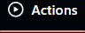
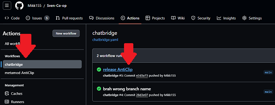
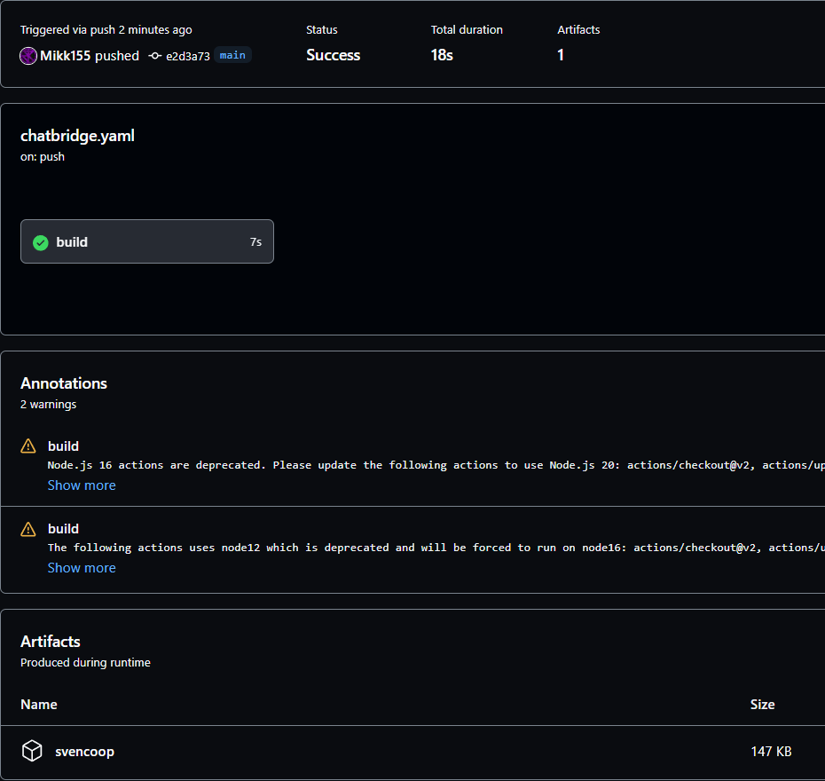
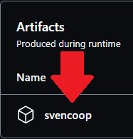

Installing scripts
Go to this repository's actions

Select the script you're interested on and click on the latest workflow run

Scroll to the bottom

Click on the artifact to download

Extract the content within Sven Co-op/svencoop/
For plugins please use "name" in default_plugins.txt to be the name of the file as these sometimes do check for other plugins installed.